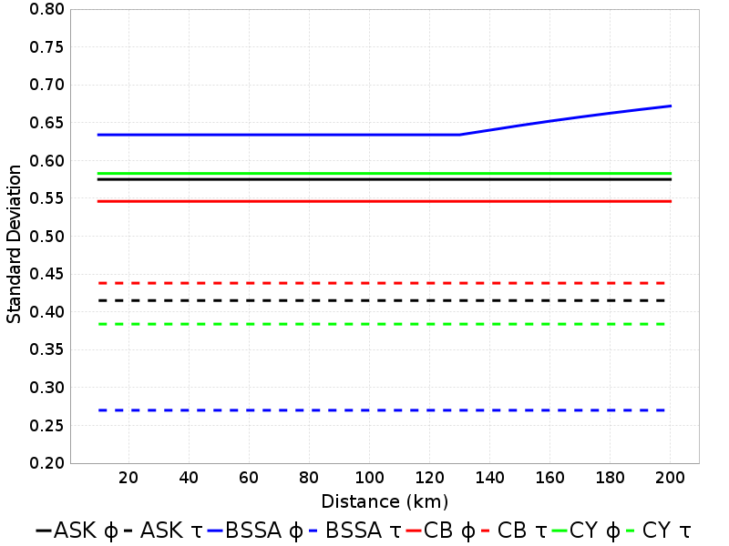
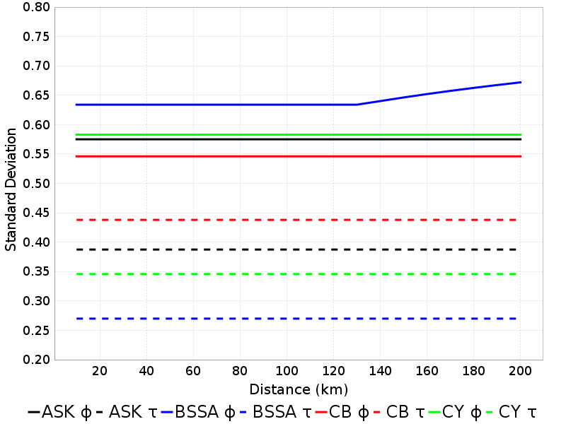
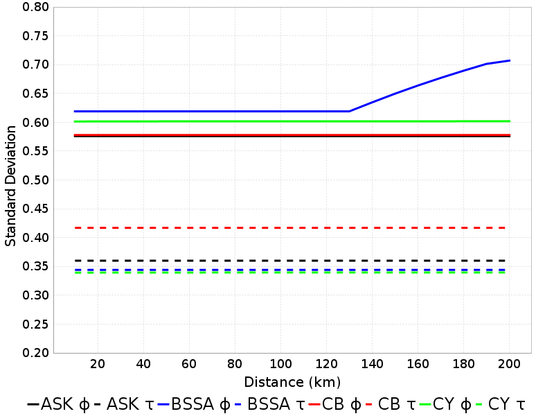
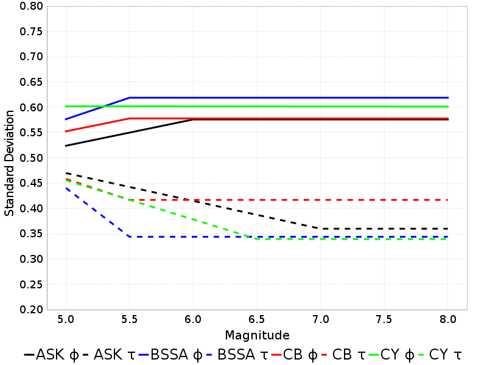
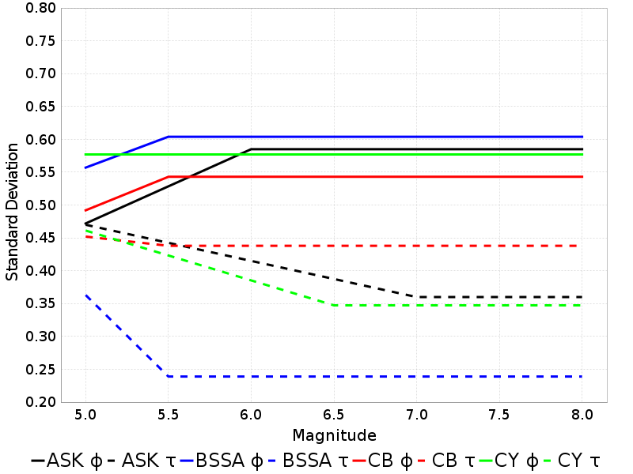
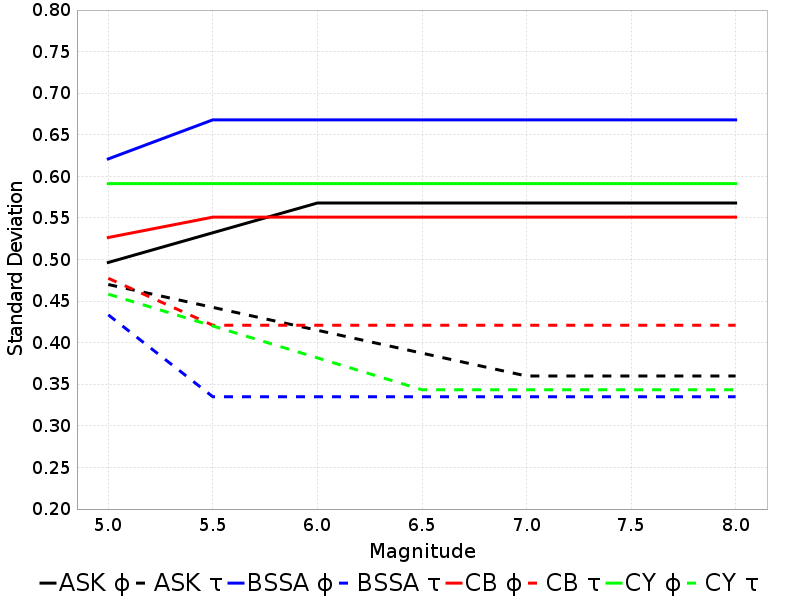
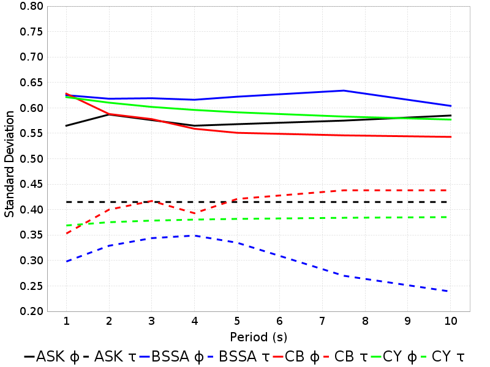
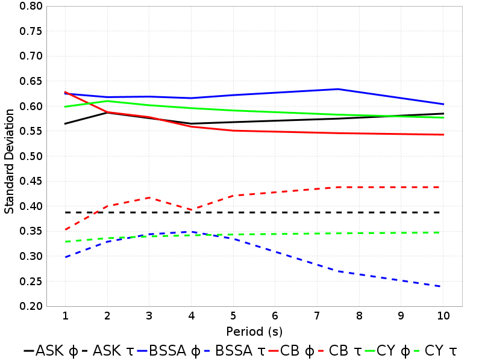
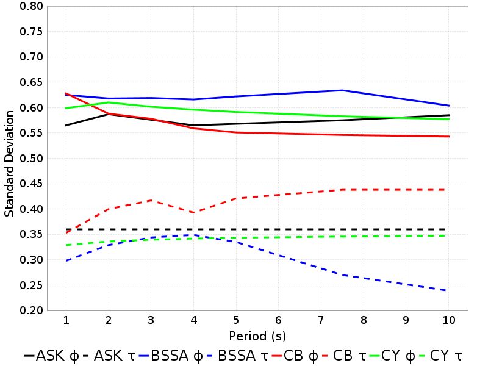
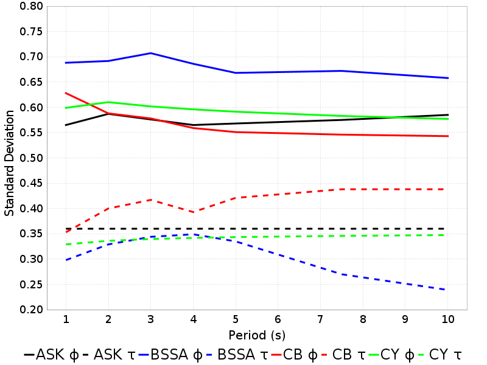

NGA-West2 Phi/Tau Dependence
Table Of Contents
Constant parameters
(top)
All calculations hold the following parameters constant:
- Dip: 90
- Fault Type: Strike-Slip
- Vs30: 863
- Vs30 Inferred: false
- Width: 10
- zHyp: 5
- zTop: 0
- rJB = rRup = rX
Summary Table
(top)
| Distance (km) | Mw | Period (s) | ASK φ | ASK τ | BSSA φ | BSSA τ | CB φ | CB τ | CY φ | CY τ |
|---|
| 20 | 6 | 3 | 0.58 | 0.41 | 0.62 | 0.34 | 0.58 | 0.42 | 0.6 | 0.38 |
| 20 | 6 | 5 | 0.57 | 0.41 | 0.62 | 0.34 | 0.55 | 0.42 | 0.59 | 0.38 |
| 20 | 6 | 7.5 | 0.57 | 0.41 | 0.63 | 0.27 | 0.55 | 0.44 | 0.58 | 0.38 |
| 20 | 6 | 10 | 0.58 | 0.41 | 0.6 | 0.24 | 0.54 | 0.44 | 0.58 | 0.39 |
| 20 | 6.5 | 3 | 0.58 | 0.39 | 0.62 | 0.34 | 0.58 | 0.42 | 0.6 | 0.34 |
| 20 | 6.5 | 5 | 0.57 | 0.39 | 0.62 | 0.34 | 0.55 | 0.42 | 0.59 | 0.34 |
| 20 | 6.5 | 7.5 | 0.57 | 0.39 | 0.63 | 0.27 | 0.55 | 0.44 | 0.58 | 0.35 |
| 20 | 6.5 | 10 | 0.58 | 0.39 | 0.6 | 0.24 | 0.54 | 0.44 | 0.58 | 0.35 |
| 20 | 7 | 3 | 0.58 | 0.36 | 0.62 | 0.34 | 0.58 | 0.42 | 0.6 | 0.34 |
| 20 | 7 | 5 | 0.57 | 0.36 | 0.62 | 0.34 | 0.55 | 0.42 | 0.59 | 0.34 |
| 20 | 7 | 7.5 | 0.57 | 0.36 | 0.63 | 0.27 | 0.55 | 0.44 | 0.58 | 0.35 |
| 20 | 7 | 10 | 0.58 | 0.36 | 0.6 | 0.24 | 0.54 | 0.44 | 0.58 | 0.35 |
| 20 | 7.5 | 3 | 0.58 | 0.36 | 0.62 | 0.34 | 0.58 | 0.42 | 0.6 | 0.34 |
| 20 | 7.5 | 5 | 0.57 | 0.36 | 0.62 | 0.34 | 0.55 | 0.42 | 0.59 | 0.34 |
| 20 | 7.5 | 7.5 | 0.57 | 0.36 | 0.63 | 0.27 | 0.55 | 0.44 | 0.58 | 0.35 |
| 20 | 7.5 | 10 | 0.58 | 0.36 | 0.6 | 0.24 | 0.54 | 0.44 | 0.58 | 0.35 |
| Distance (km) | Mw | Period (s) | ASK φ | ASK τ | BSSA φ | BSSA τ | CB φ | CB τ | CY φ | CY τ |
| 50 | 6 | 3 | 0.58 | 0.41 | 0.62 | 0.34 | 0.58 | 0.42 | 0.6 | 0.38 |
| 50 | 6 | 5 | 0.57 | 0.41 | 0.62 | 0.34 | 0.55 | 0.42 | 0.59 | 0.38 |
| 50 | 6 | 7.5 | 0.57 | 0.41 | 0.63 | 0.27 | 0.55 | 0.44 | 0.58 | 0.38 |
| 50 | 6 | 10 | 0.58 | 0.41 | 0.6 | 0.24 | 0.54 | 0.44 | 0.58 | 0.39 |
| 50 | 6.5 | 3 | 0.58 | 0.39 | 0.62 | 0.34 | 0.58 | 0.42 | 0.6 | 0.34 |
| 50 | 6.5 | 5 | 0.57 | 0.39 | 0.62 | 0.34 | 0.55 | 0.42 | 0.59 | 0.34 |
| 50 | 6.5 | 7.5 | 0.57 | 0.39 | 0.63 | 0.27 | 0.55 | 0.44 | 0.58 | 0.35 |
| 50 | 6.5 | 10 | 0.58 | 0.39 | 0.6 | 0.24 | 0.54 | 0.44 | 0.58 | 0.35 |
| 50 | 7 | 3 | 0.58 | 0.36 | 0.62 | 0.34 | 0.58 | 0.42 | 0.6 | 0.34 |
| 50 | 7 | 5 | 0.57 | 0.36 | 0.62 | 0.34 | 0.55 | 0.42 | 0.59 | 0.34 |
| 50 | 7 | 7.5 | 0.57 | 0.36 | 0.63 | 0.27 | 0.55 | 0.44 | 0.58 | 0.35 |
| 50 | 7 | 10 | 0.58 | 0.36 | 0.6 | 0.24 | 0.54 | 0.44 | 0.58 | 0.35 |
| 50 | 7.5 | 3 | 0.58 | 0.36 | 0.62 | 0.34 | 0.58 | 0.42 | 0.6 | 0.34 |
| 50 | 7.5 | 5 | 0.57 | 0.36 | 0.62 | 0.34 | 0.55 | 0.42 | 0.59 | 0.34 |
| 50 | 7.5 | 7.5 | 0.57 | 0.36 | 0.63 | 0.27 | 0.55 | 0.44 | 0.58 | 0.35 |
| 50 | 7.5 | 10 | 0.58 | 0.36 | 0.6 | 0.24 | 0.54 | 0.44 | 0.58 | 0.35 |
| Distance (km) | Mw | Period (s) | ASK φ | ASK τ | BSSA φ | BSSA τ | CB φ | CB τ | CY φ | CY τ |
| 100 | 6 | 3 | 0.58 | 0.41 | 0.62 | 0.34 | 0.58 | 0.42 | 0.6 | 0.38 |
| 100 | 6 | 5 | 0.57 | 0.41 | 0.62 | 0.34 | 0.55 | 0.42 | 0.59 | 0.38 |
| 100 | 6 | 7.5 | 0.57 | 0.41 | 0.63 | 0.27 | 0.55 | 0.44 | 0.58 | 0.38 |
| 100 | 6 | 10 | 0.58 | 0.41 | 0.6 | 0.24 | 0.54 | 0.44 | 0.58 | 0.39 |
| 100 | 6.5 | 3 | 0.58 | 0.39 | 0.62 | 0.34 | 0.58 | 0.42 | 0.6 | 0.34 |
| 100 | 6.5 | 5 | 0.57 | 0.39 | 0.62 | 0.34 | 0.55 | 0.42 | 0.59 | 0.34 |
| 100 | 6.5 | 7.5 | 0.57 | 0.39 | 0.63 | 0.27 | 0.55 | 0.44 | 0.58 | 0.35 |
| 100 | 6.5 | 10 | 0.58 | 0.39 | 0.6 | 0.24 | 0.54 | 0.44 | 0.58 | 0.35 |
| 100 | 7 | 3 | 0.58 | 0.36 | 0.62 | 0.34 | 0.58 | 0.42 | 0.6 | 0.34 |
| 100 | 7 | 5 | 0.57 | 0.36 | 0.62 | 0.34 | 0.55 | 0.42 | 0.59 | 0.34 |
| 100 | 7 | 7.5 | 0.57 | 0.36 | 0.63 | 0.27 | 0.55 | 0.44 | 0.58 | 0.35 |
| 100 | 7 | 10 | 0.58 | 0.36 | 0.6 | 0.24 | 0.54 | 0.44 | 0.58 | 0.35 |
| 100 | 7.5 | 3 | 0.58 | 0.36 | 0.62 | 0.34 | 0.58 | 0.42 | 0.6 | 0.34 |
| 100 | 7.5 | 5 | 0.57 | 0.36 | 0.62 | 0.34 | 0.55 | 0.42 | 0.59 | 0.34 |
| 100 | 7.5 | 7.5 | 0.57 | 0.36 | 0.63 | 0.27 | 0.55 | 0.44 | 0.58 | 0.35 |
| 100 | 7.5 | 10 | 0.58 | 0.36 | 0.6 | 0.24 | 0.54 | 0.44 | 0.58 | 0.35 |
| Distance (km) | Mw | Period (s) | ASK φ | ASK τ | BSSA φ | BSSA τ | CB φ | CB τ | CY φ | CY τ |
| 200 | 6 | 3 | 0.58 | 0.41 | 0.71 | 0.34 | 0.58 | 0.42 | 0.6 | 0.38 |
| 200 | 6 | 5 | 0.57 | 0.41 | 0.67 | 0.34 | 0.55 | 0.42 | 0.59 | 0.38 |
| 200 | 6 | 7.5 | 0.57 | 0.41 | 0.67 | 0.27 | 0.55 | 0.44 | 0.58 | 0.38 |
| 200 | 6 | 10 | 0.58 | 0.41 | 0.66 | 0.24 | 0.54 | 0.44 | 0.58 | 0.39 |
| 200 | 6.5 | 3 | 0.58 | 0.39 | 0.71 | 0.34 | 0.58 | 0.42 | 0.6 | 0.34 |
| 200 | 6.5 | 5 | 0.57 | 0.39 | 0.67 | 0.34 | 0.55 | 0.42 | 0.59 | 0.34 |
| 200 | 6.5 | 7.5 | 0.57 | 0.39 | 0.67 | 0.27 | 0.55 | 0.44 | 0.58 | 0.35 |
| 200 | 6.5 | 10 | 0.58 | 0.39 | 0.66 | 0.24 | 0.54 | 0.44 | 0.58 | 0.35 |
| 200 | 7 | 3 | 0.58 | 0.36 | 0.71 | 0.34 | 0.58 | 0.42 | 0.6 | 0.34 |
| 200 | 7 | 5 | 0.57 | 0.36 | 0.67 | 0.34 | 0.55 | 0.42 | 0.59 | 0.34 |
| 200 | 7 | 7.5 | 0.57 | 0.36 | 0.67 | 0.27 | 0.55 | 0.44 | 0.58 | 0.35 |
| 200 | 7 | 10 | 0.58 | 0.36 | 0.66 | 0.24 | 0.54 | 0.44 | 0.58 | 0.35 |
| 200 | 7.5 | 3 | 0.58 | 0.36 | 0.71 | 0.34 | 0.58 | 0.42 | 0.6 | 0.34 |
| 200 | 7.5 | 5 | 0.57 | 0.36 | 0.67 | 0.34 | 0.55 | 0.42 | 0.59 | 0.34 |
| 200 | 7.5 | 7.5 | 0.57 | 0.36 | 0.67 | 0.27 | 0.55 | 0.44 | 0.58 | 0.35 |
| 200 | 7.5 | 10 | 0.58 | 0.36 | 0.66 | 0.24 | 0.54 | 0.44 | 0.58 | 0.35 |
Distance Dependence
(top)
| Mw, Period | 3 s | 5 s | 7.5 s | 10 s |
|---|
| 6 |  |  |  |  |
| 6.5 |  |  |  |  |
| 7 |  |  |  |  |
| 7.5 |  |  |  |  |
Magnitude Dependence
(top)
| Distance, Period | 3 s | 5 s | 7.5 s | 10 s |
|---|
| 20 km | |  |  |  |
| 50 km |  |  |  |  |
| 100 km | |  |  |  |
| 200 km |  |  |  |  |
Period Dependence
(top)
| Mw, Distance | 20 km | 50 km | 100 km | 200 km |
|---|
| 6 |  |  |  |  |
| 6.5 |  |  |  |  |
| 7 |  | |  |  |
| 7.5 |  | |  |  |